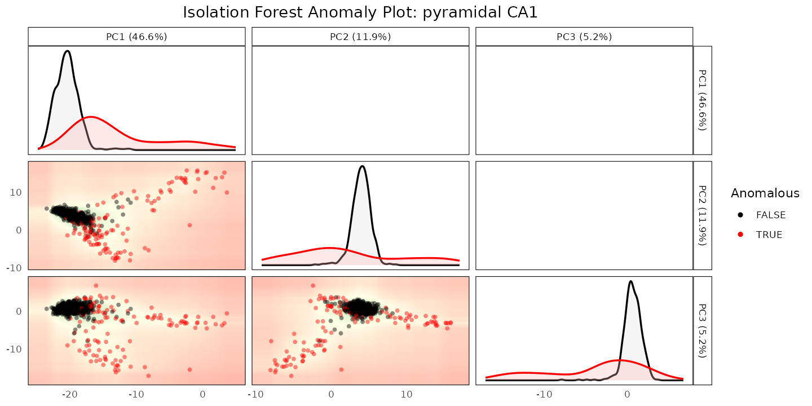
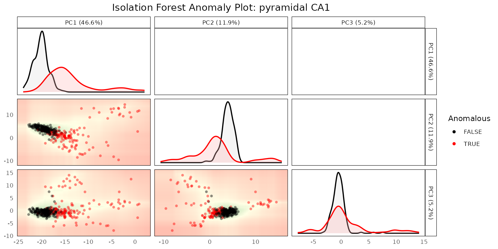
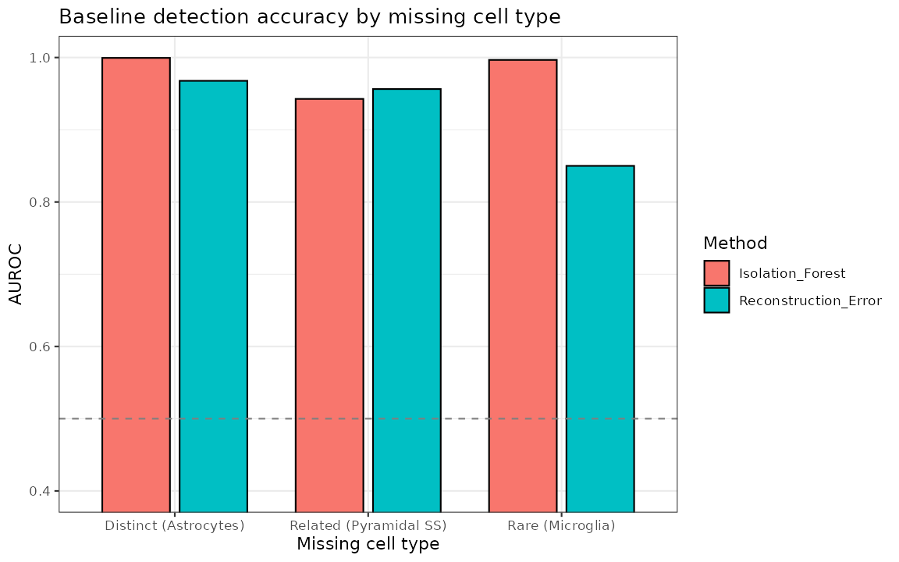
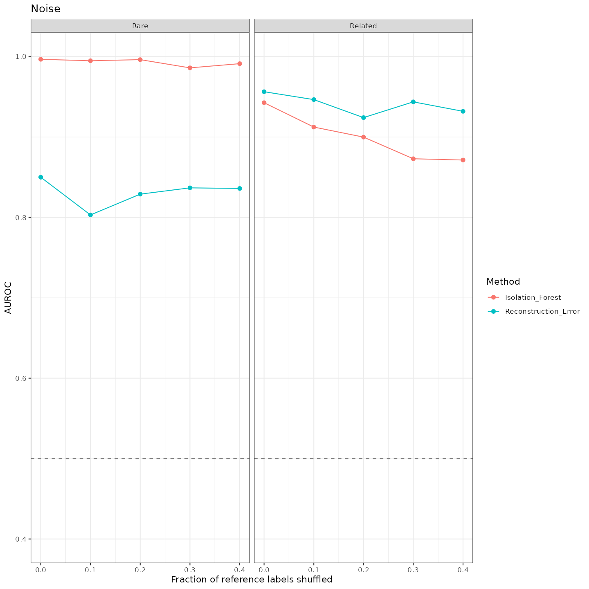
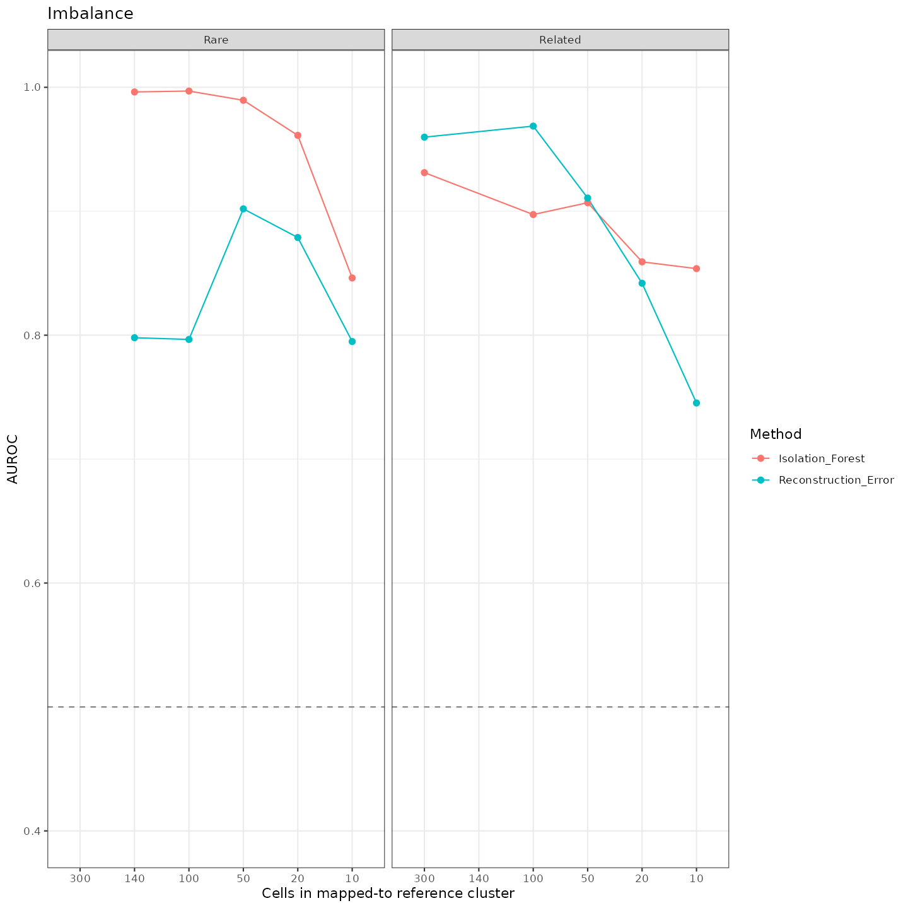
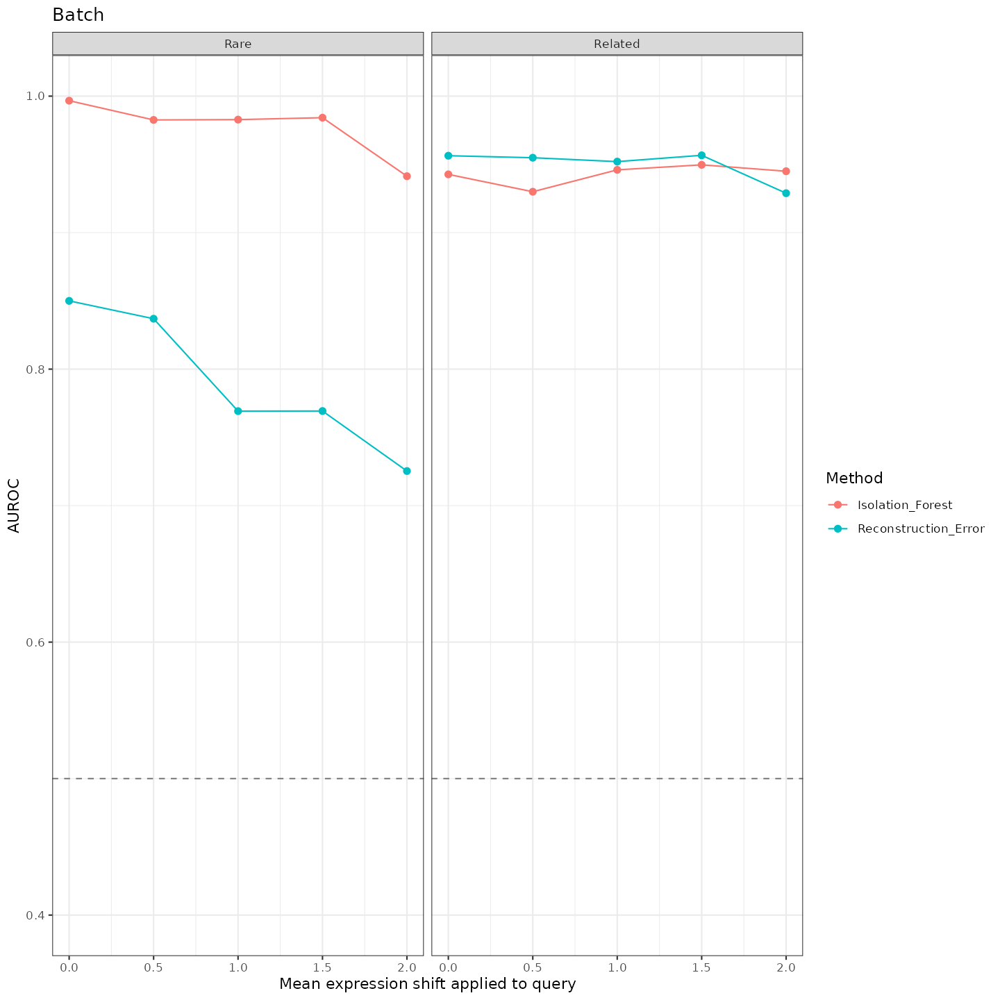
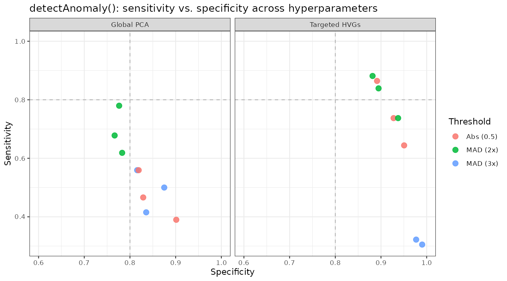
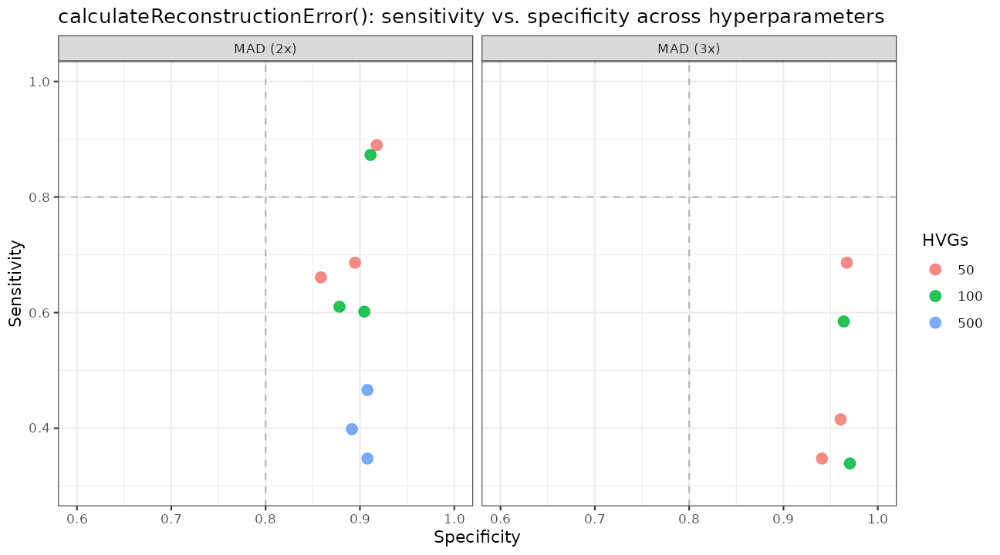

2. Benchmarking Anomaly Detection Against Ground Truth
Anthony Christidis
Core for Computational Biomedicine, Harvard Medical SchoolAndrew Ghazi
Core for Computational Biomedicine, Harvard Medical SchoolSmriti Chawla
Core for Computational Biomedicine, Harvard Medical SchoolNitesh Turaga
Core for Computational Biomedicine, Harvard Medical SchoolLudwig Geistlinger
Core for Computational Biomedicine, Harvard Medical SchoolRobert Gentleman
Core for Computational Biomedicine, Harvard Medical SchoolSource:
vignettes/ZeiselBenchmarking.Rmd
ZeiselBenchmarking.RmdPurpose
Vignette
1 showed detectAnomaly() correctly flagging a subset of
misannotated cells in one simulated example. A single example only goes
so far: how well does this actually work in general, and how sensitive
is it to the choices you have to make - which cell type is missing, how
much label noise is in the reference, how imbalanced the cell types are,
or how large a batch effect separates query from reference?
This vignette works through those questions on the Zeisel mouse brain
dataset (scRNAseq),
comparing detectAnomaly() (Isolation Forest) against
calculateReconstructionError() (PCA reconstruction error),
the package’s two cell-type-specific anomaly detection methods.
A live example: a withheld cell type related to a retained one
zeisel_reference_data and zeisel_query_data
are a 70/30 split of the Zeisel dataset (log-normalized, top 250 HVGs,
PCA precomputed); see ?zeisel_reference_data for
details.
data("zeisel_reference_data")
data("zeisel_query_data")
table(zeisel_reference_data$true_cell_type)
#>
#> astrocytes_ependymal endothelial-mural interneurons
#> 143 158 196
#> microglia oligodendrocytes pyramidal CA1
#> 68 572 685
#> pyramidal SS
#> 281We withhold “pyramidal SS” from the reference entirely - a harder
detection problem than withholding a rare-but-distinct type, since
pyramidal SS is transcriptionally similar to the retained “pyramidal
CA1” type. We use SingleR to see where the query’s true
pyramidal SS cells end up being mapped:
set.seed(1)
reference_missing <- zeisel_reference_data[, zeisel_reference_data$true_cell_type != "pyramidal SS"]
reference_missing <- scater::runPCA(reference_missing, ncomponents = 10)
pred <- SingleR(test = zeisel_query_data, ref = reference_missing,
labels = reference_missing$true_cell_type)
zeisel_query_data$SingleR_annotation <- pred$labels
table(zeisel_query_data$SingleR_annotation[zeisel_query_data$true_cell_type == "pyramidal SS"])
#>
#> astrocytes_ependymal interneurons oligodendrocytes
#> 1 1 10
#> pyramidal CA1
#> 106Nearly all the true pyramidal SS cells get mapped to “pyramidal CA1”.
Since we know which query cells are truly pyramidal SS, we can check how
well detectAnomaly() and
calculateReconstructionError() separate them from the
correctly-labeled pyramidal CA1 cells they were mapped alongside:
target <- "pyramidal CA1"
anomaly_output <- detectAnomaly(
reference_data = reference_missing, query_data = zeisel_query_data,
ref_cell_type_col = "true_cell_type", query_cell_type_col = "SingleR_annotation",
cell_types = target, n_hvgs = 30, pc_subset = 1:8, n_tree = 500)
reconstruction_output <- calculateReconstructionError(
reference_data = reference_missing, query_data = zeisel_query_data,
ref_cell_type_col = "true_cell_type", query_cell_type_col = "SingleR_annotation",
cell_types = target, n_hvgs = 30, pc_subset = 1:8)
labels_target <- zeisel_query_data$true_cell_type[zeisel_query_data$SingleR_annotation == target]
data.frame(
Method = c("detectAnomaly (Isolation Forest)", "calculateReconstructionError"),
`True pyramidal SS flagged` = c(
mean(anomaly_output[[target]]$query_anomaly[labels_target == "pyramidal SS"]),
mean(reconstruction_output[[target]]$query_anomaly[labels_target == "pyramidal SS"])),
`True pyramidal CA1 flagged` = c(
mean(anomaly_output[[target]]$query_anomaly[labels_target == target]),
mean(reconstruction_output[[target]]$query_anomaly[labels_target == target])),
check.names = FALSE)
#> Method True pyramidal SS flagged
#> 1 detectAnomaly (Isolation Forest) 0.8113208
#> 2 calculateReconstructionError 0.8962264
#> True pyramidal CA1 flagged
#> 1 0.2292490
#> 2 0.1264822In this run, both methods flag most of the true pyramidal SS cells
while flagging a smaller fraction of the correctly-labeled pyramidal CA1
cells - neither is perfect, which is exactly the situation where
combining them (see below) is worth considering. We can visualize the
Isolation Forest result; data_type shows one dataset per
plot, so we look at the reference (defining what “normal” looks like)
and the query (colored by anomaly status) side by side:
plot(anomaly_output, cell_type = target, data_type = "reference", pc_subset = 1:3)
plot(anomaly_output, cell_type = target, data_type = "query", pc_subset = 1:3)
This is one scenario (one withheld cell type, one reference/query
split, default settings beyond
n_hvgs/pc_subset). The rest of this vignette
summarizes a systematic evaluation across many such scenarios, computed
once offline on the full (non-downsampled) Zeisel dataset; see
?zeisel_benchmark_results and
inst/script/ZeiselBenchmarkResults.R for the exact
procedure.
Baseline: distinct, related, and rare withheld cell types
Withholding a cell type that is transcriptionally distinct from everything else (astrocytes) is an easier detection problem than withholding one that closely resembles a retained cell type (pyramidal SS, which is related to the retained pyramidal CA1), or one that is simply rare (microglia):
baseline <- zeisel_benchmark_results$gradients %>%
filter(TestGroup == "Baseline") %>%
mutate(Test = factor(Test, levels = c("Distinct (Astrocytes)",
"Related (Pyramidal SS)",
"Rare (Microglia)")))
ggplot(baseline, aes(x = Test, y = AUROC, fill = Method)) +
geom_col(position = position_dodge(width = 0.8), width = 0.7, color = "black") +
geom_hline(yintercept = 0.5, linetype = "dashed", color = "gray50") +
coord_cartesian(ylim = c(0.4, 1)) +
labs(x = "Missing cell type", y = "AUROC",
title = "Baseline detection accuracy by missing cell type") +
theme_bw()
Across these three scenarios, both methods reach a high AUROC, with Isolation Forest at or above 0.94 in all three and Reconstruction Error weakest on the rare (microglia) scenario in this particular run.
Sensitivity to label noise, class imbalance, and batch effects
For the “related” (pyramidal SS) and “rare” (microglia) scenarios, the benchmark also varies three conditions independently: the fraction of reference labels randomly shuffled (label noise), the number of cells retained in the mapped-to reference cluster (class imbalance), and a mean expression shift applied to 20% of query genes (a stand-in for a batch effect).
gradients <- zeisel_benchmark_results$gradients %>%
filter(TestGroup %in% c("Related", "Rare"))
plot_gradient <- function(df, test_name, x_lab, decreasing_x = FALSE) {
sub_df <- df %>% filter(Test == test_name)
sub_df$X_Value <- if (decreasing_x) {
factor(sub_df$X_Value, levels = sort(as.numeric(unique(sub_df$X_Value)), decreasing = TRUE))
} else {
as.numeric(sub_df$X_Value)
}
ggplot(sub_df, aes(x = X_Value, y = AUROC, color = Method, group = Method)) +
geom_line() + geom_point(size = 2) +
geom_hline(yintercept = 0.5, linetype = "dashed", color = "gray50") +
coord_cartesian(ylim = c(0.4, 1)) +
facet_wrap(~TestGroup) +
labs(x = x_lab, y = "AUROC", title = test_name) +
theme_bw()
}
noise_plot <- plot_gradient(gradients, "Noise", "Fraction of reference labels shuffled")
imbalance_plot <- plot_gradient(gradients, "Imbalance", "Cells in mapped-to reference cluster", decreasing_x = TRUE)
batch_plot <- plot_gradient(gradients, "Batch", "Mean expression shift applied to query")
noise_plot
imbalance_plot
batch_plot
In this benchmark, both methods stay well above the AUROC = 0.5 no-skill baseline across the full range of label noise and class imbalance tested. Under an increasing batch effect, Isolation Forest tends to hold up better than Reconstruction Error in the rare (microglia) scenario - consistent with the idea that a tree-based method partitioning on individual PCs can be more robust to a systematic shift than a global reconstruction-error metric, though this is a pattern observed in this specific benchmark rather than a general guarantee.
Hyperparameter sensitivity
Both methods require choices: how many HVGs or PCs to use, and what threshold marks a cell as anomalous. The benchmark also grid-searches these choices for a single scenario (pyramidal SS withheld, mapped to pyramidal CA1):
Each point is one hyperparameter configuration (a choice of PCs or
HVGs, and a threshold rule); splitting the grid into one panel per
feature space (for detectAnomaly()) or per MAD threshold
(for calculateReconstructionError()) keeps each panel to a
handful of points:
ggplot(zeisel_benchmark_results$if_tuning,
aes(x = Specificity, y = Sensitivity, color = Threshold)) +
geom_hline(yintercept = 0.8, linetype = "dashed", color = "gray70") +
geom_vline(xintercept = 0.8, linetype = "dashed", color = "gray70") +
geom_point(size = 3, alpha = 0.85) +
facet_wrap(~Mode) +
coord_cartesian(xlim = c(0.6, 1), ylim = c(0.3, 1)) +
labs(title = "detectAnomaly(): sensitivity vs. specificity across hyperparameters") +
theme_bw()
ggplot(zeisel_benchmark_results$re_tuning,
aes(x = Specificity, y = Sensitivity, color = HVGs)) +
geom_hline(yintercept = 0.8, linetype = "dashed", color = "gray70") +
geom_vline(xintercept = 0.8, linetype = "dashed", color = "gray70") +
geom_point(size = 3, alpha = 0.85) +
facet_wrap(~MAD_Threshold) +
coord_cartesian(xlim = c(0.6, 1), ylim = c(0.3, 1)) +
labs(title = "calculateReconstructionError(): sensitivity vs. specificity across hyperparameters") +
theme_bw()
(The dashed lines mark 80% sensitivity/specificity as a rough visual
reference, not a formal threshold.) Within each panel, points still vary
by PC subset or HVG count - the full per-configuration breakdown is in
zeisel_benchmark_results$if_tuning/re_tuning
if you want to identify a specific one.
In this grid, no single configuration dominates on both sensitivity
and specificity simultaneously (the usual precision/recall trade-off).
For this particular scenario, configurations using a small,
cell-type-targeted set of HVGs with a MAD-based threshold tend to land
closer to the top-right (high sensitivity and specificity) corner - but
that is a property of this benchmark, not a universal ranking
of hyperparameters, and a different dataset could favor a different
configuration. n_hvgs = 30 with a MAD-based threshold (the
defaults used earlier in this vignette) is a reasonable starting point
rather than a claim that it is optimal in general; it’s worth
re-checking against your own data if detection accuracy matters a lot
for your use case.
Combining both methods
detectAnomaly() and
calculateReconstructionError() look at different parts of
the data and can fail in different ways, which makes them candidates for
use together rather than as competitors:
-
detectAnomaly()partitions cells directly along the retained principal components - it flags cells that sit in an unusual location within that low-dimensional PC subspace. -
calculateReconstructionError()does the opposite in a sense: it compresses each cell to that same low-dimensional subspace and back, and flags cells whose original expression profile isn’t well reconstructed - i.e. it is sensitive to signal in the subspace orthogonal to the retained PCs (loosely, the null space of the PCA projection), which Isolation Forest never looks at directly.
Because they emphasize different subspaces, flagging a cell as anomalous whenever either method flags it (the union of the two) can catch cells that one method misses but the other doesn’t - raising sensitivity beyond what either method achieves alone, at the cost of more false positives. In the pyramidal SS example above, neither method alone is perfect, and their errors don’t fully overlap:
if_flag <- anomaly_output[[target]]$query_anomaly
re_flag <- reconstruction_output[[target]]$query_anomaly
union_flag <- if_flag | re_flag
data.frame(
Rule = c("Isolation Forest only", "Reconstruction Error only",
"Either flags (union)"),
`True pyramidal SS flagged` = c(
mean(if_flag[labels_target == "pyramidal SS"]),
mean(re_flag[labels_target == "pyramidal SS"]),
mean(union_flag[labels_target == "pyramidal SS"])),
`True pyramidal CA1 flagged` = c(
mean(if_flag[labels_target == target]),
mean(re_flag[labels_target == target]),
mean(union_flag[labels_target == target])),
check.names = FALSE)
#> Rule True pyramidal SS flagged
#> 1 Isolation Forest only 0.8113208
#> 2 Reconstruction Error only 0.8962264
#> 3 Either flags (union) 0.9528302
#> True pyramidal CA1 flagged
#> 1 0.2292490
#> 2 0.1264822
#> 3 0.2964427In this run, the union flags more true pyramidal SS cells than either method alone - each method catches some cells the other misses. That gain isn’t free: the union also flags more of the correctly-labeled pyramidal CA1 cells than either method alone, since it inherits every false positive from both. Whether that trade-off is worth it (versus requiring both methods to agree, which pushes the other way - fewer false positives, but only the anomalies both methods happen to catch) depends on whether missing a real anomaly or chasing a false one is more costly for your analysis. Neither combination rule is “correct” in general, and this result is specific to this scenario, not a claim that the union always beats each method individually.
R Session Info
R version 4.6.1 (2026-06-24)
Platform: x86_64-pc-linux-gnu
Running under: Ubuntu 24.04.5 LTS
Matrix products: default
BLAS: /usr/lib/x86_64-linux-gnu/openblas-pthread/libblas.so.3
LAPACK: /usr/lib/x86_64-linux-gnu/openblas-pthread/libopenblasp-r0.3.26.so; LAPACK version 3.12.0
locale:
[1] LC_CTYPE=C.UTF-8 LC_NUMERIC=C LC_TIME=C.UTF-8
[4] LC_COLLATE=C.UTF-8 LC_MONETARY=C.UTF-8 LC_MESSAGES=C.UTF-8
[7] LC_PAPER=C.UTF-8 LC_NAME=C LC_ADDRESS=C
[10] LC_TELEPHONE=C LC_MEASUREMENT=C.UTF-8 LC_IDENTIFICATION=C
time zone: UTC
tzcode source: system (glibc)
attached base packages:
[1] stats4 stats graphics grDevices utils datasets methods
[8] base
other attached packages:
[1] dplyr_1.2.1 ggplot2_4.0.3
[3] SingleR_2.14.2 SingleCellExperiment_1.34.0
[5] SummarizedExperiment_1.42.0 Biobase_2.72.0
[7] GenomicRanges_1.64.0 Seqinfo_1.2.0
[9] IRanges_2.46.0 S4Vectors_0.50.3
[11] BiocGenerics_0.58.1 generics_0.1.4
[13] MatrixGenerics_1.24.0 matrixStats_1.5.0
[15] scDiagnostics_1.7.15 BiocStyle_2.40.0
loaded via a namespace (and not attached):
[1] gridExtra_2.3.1 rlang_1.3.0 magrittr_2.0.5
[4] scater_1.40.2 otel_0.2.0 ggridges_0.5.7
[7] compiler_4.6.1 systemfonts_1.3.2 vctrs_0.7.3
[10] pkgconfig_2.0.3 fastmap_1.2.0 XVector_0.52.0
[13] scuttle_1.22.0 labeling_0.4.3 rmarkdown_2.32
[16] ggbeeswarm_0.7.3 ragg_1.5.2 purrr_1.2.2
[19] xfun_0.61 bluster_1.22.0 cachem_1.1.0
[22] beachmat_2.28.0 jsonlite_2.0.0 DelayedArray_0.38.2
[25] BiocParallel_1.46.0 irlba_2.3.7 parallel_4.6.1
[28] cluster_2.1.8.2 R6_2.6.1 bslib_0.12.0
[31] RColorBrewer_1.1-3 limma_3.68.5 GGally_2.4.0
[34] jquerylib_0.1.4 Rcpp_1.1.2 bookdown_0.48
[37] knitr_1.52 Matrix_1.7-5 igraph_2.3.3
[40] tidyselect_1.2.1 abind_1.4-8 yaml_2.3.12
[43] viridis_0.6.5 codetools_0.2-20 lattice_0.22-9
[46] tibble_3.3.1 withr_3.0.3 S7_0.2.2
[49] evaluate_1.0.5 desc_1.4.3 ggstats_0.14.0
[52] pillar_1.11.1 BiocManager_1.30.27 scales_1.4.0
[55] RhpcBLASctl_0.23-42 glue_1.8.1 metapod_1.20.0
[58] tools_4.6.1 BiocNeighbors_2.6.0 ScaledMatrix_1.20.0
[61] locfit_1.5-9.12 fs_2.1.0 scran_1.40.0
[64] grid_4.6.1 tidyr_1.3.2 edgeR_4.10.5
[67] beeswarm_0.4.0 BiocSingular_1.28.0 vipor_0.4.7
[70] cli_3.6.6 rsvd_1.0.5 textshaping_1.0.5
[73] S4Arrays_1.12.0 viridisLite_0.4.3 gtable_0.3.6
[76] isotree_0.6.1-5 sass_0.4.10 digest_0.6.39
[79] SparseArray_1.12.2 ggrepel_0.9.8 dqrng_0.4.1
[82] htmlwidgets_1.6.4 farver_2.1.2 htmltools_0.5.9
[85] pkgdown_2.2.1 lifecycle_1.0.5 statmod_1.5.2